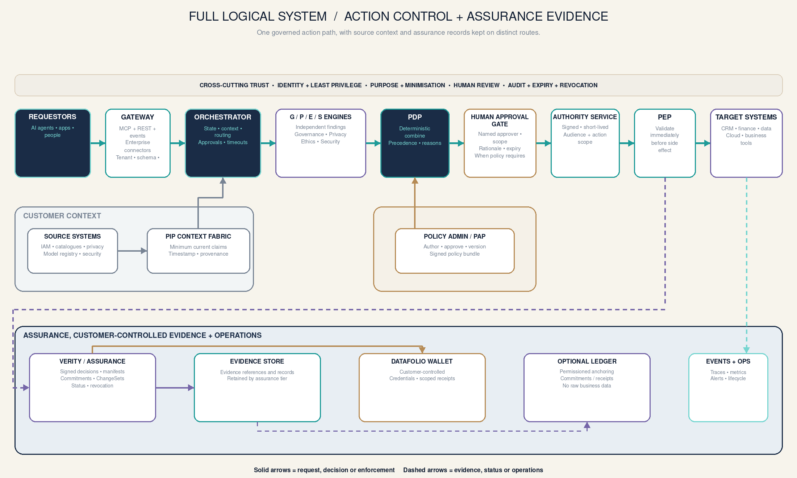
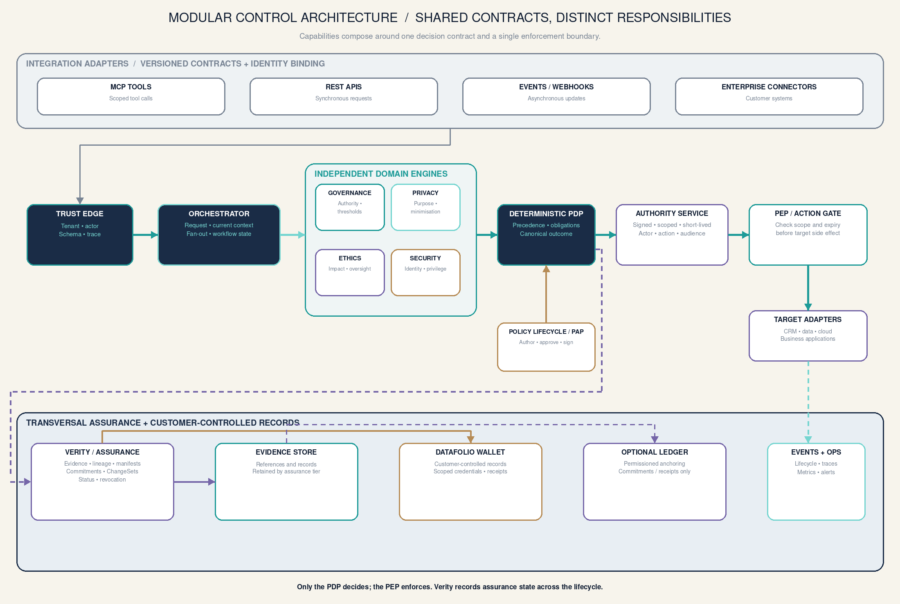
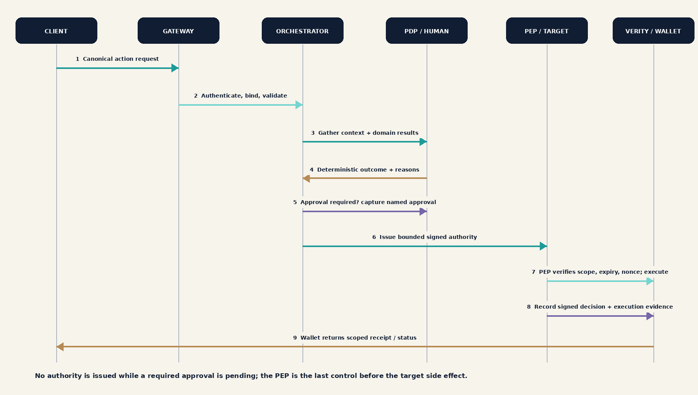
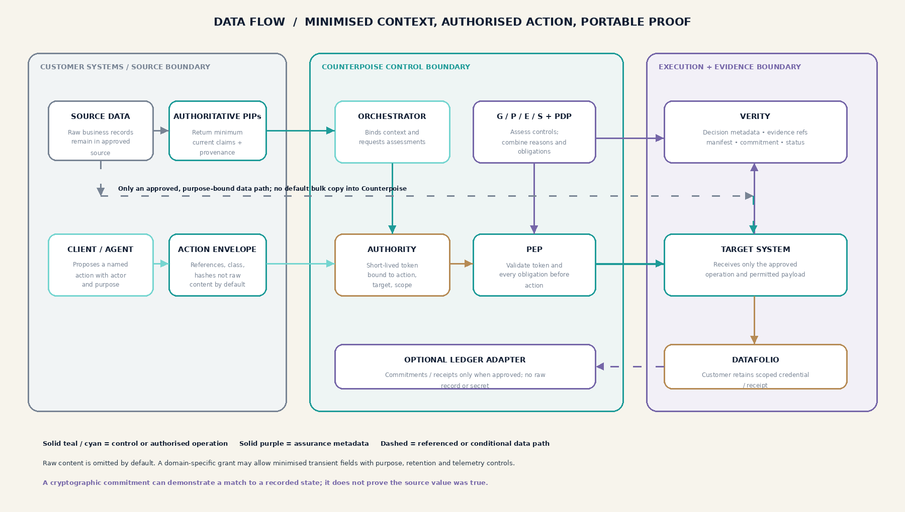

Datafolio
Keep selected credentials and proof receipts under customer control, then present only what a specific audience needs.
Counterpoise gives organisations practical governance, privacy, ethics, security and assurance controls that fit the way work is actually done.
Keep selected credentials and proof receipts under customer control, then present only what a specific audience needs.
Start with one problem, add capability as your operating maturity grows. Each module has a clear purpose, owner and outcome.
Datafolio is the wallet capability for keeping selected credentials, assurance records and proof receipts under customer control. It supports scoped presentation and visible status; it does not decide whether a Counterpoise action is allowed.
Illustrative records only · nothing is transmitted
Choose a local demo action to see how scoped sharing and status changes are presented.
Datafolio can hold or reference customer-selected credentials, manifests and proof receipts. Source business data stays in its approved system by default.
A presentation can be limited by credential, claim, audience, purpose and validity period, so a reviewer receives only the evidence needed for that interaction.
Expiry, revocation and changed assurance states remain visible. A cryptographic commitment can show whether a presented value matches a recorded state; it does not prove the original source claim was true.
The wallet view is illustrative; it does not issue credentials, store customer records, connect to a blockchain or send presentations.
See how different leaders can use the same modular foundation to solve a different business problem.
Counterpoise can be introduced in the way that fits your risk profile, data environment and pace of adoption.
Modular access for organisations that want a quick path to controlled adoption.
A separated operating space for stronger control over configuration and access.
For regulated or sensitive environments requiring local control and deployment autonomy.
No cloud service, account, API or customer data is connected.
A platform-neutral deployment model lets Counterpoise use the customer’s preferred cloud boundary while keeping the control plane, module contracts and assurance model consistent.
The standalone demo contains no cloud credentials, APIs, telemetry or connected customer data.
Explore the complete control path, the modular service boundaries, the decision sequence and the data movement model. These are reference diagrams for the proposed design; this local demo has no live integrations.




Governance, Privacy, Ethics and Security return separate, explainable findings. Each assesses within its domain and cannot grant execution authority.
The deterministic PDP combines required findings under versioned policy. If permitted, the authority service issues scoped, short-lived authority; the PEP validates it immediately before the target action.
Verity records decision context, provenance, attestations and change state. Datafolio can retain customer-selected credentials or receipts; an external ledger remains optional.
Explore the complete control path, the modular service boundaries, the decision sequence and the data movement model. These are reference diagrams for the proposed design; this local demo has no live integrations.
Governance, Privacy, Ethics and Security return separate, explainable findings. Each assesses within its domain and cannot grant execution authority.
The deterministic PDP combines required findings under versioned policy. If permitted, the authority service issues scoped, short-lived authority; the PEP validates it immediately before the target action.
Verity records decision context, provenance, attestations and change state. Datafolio can retain customer-selected credentials or receipts; an external ledger remains optional.
Counterpoise is structured as independent capabilities around a common control plane, with Verity providing the evidence and assurance thread across the workflow.
Modules communicate through versioned API, event and policy contracts so capability can evolve without redesigning the whole platform.
Identity, least privilege, approval gates, signed authority and continuous revocation sit around the execution path.
Events, health, change and evidence signals support operational oversight across multi-tenant, dedicated and private profiles.
See which decision-critical assets are assured, what changed, and where a customer action is needed. This illustrative view is designed for operational owners, risk leaders and reviewers.
Verity is the assurance and evidence capability within Counterpoise. Statuses are illustrative and demonstrate how provenance, checks, changes and attestations can be presented to customers.
Verity turns important data and decisions into a reviewable evidence trail: what entered the workflow, what checks ran, what changed, who acted and what assurance state applies now.
Canonical commitment → evidence set → proof reference → named attestation
Reviewable and exportableSource identity, time, lineage and handling context remain visible around each assurance record.
Canonical commitments and proof references make unexpected change visible for review and escalation.
Named owners, checks, approvals and attestations connect evidence to responsibility.